강의 상세 리포트
Codex와 시작하는 주피터 노트북 — 만들고 실행하며 배우는 첫 실습
한국어로 노트북을 만들고, 첫 출력부터 오류 복구까지 한 단계씩 따라 한다
한국어로 만들기를 요청하고, 실행 결과는 직접 확인한다
핵심 질문 — 주피터 노트북을 처음 쓰는 사람도 Codex와 함께 파일을 만들고 직접 실행할 수 있을까?
핵심 결론 — Codex에 만들 내용을 한국어로 요청하고, 생성된 노트북의 코드 셀을 하나씩 실행하면서 예상한 출력이 나오는지 확인하면 된다.
이번 실습의 목표는 내가 만든 노트북에서 첫 문장을 출력하는 것이다. 이어서 작은 숫자 계산과 CSV 열기를 해 본다. Python 문법을 모두 외우거나 금융 데이터를 정교하게 검사하는 일부터 시작하지 않는다. 설명을 읽고, 실행 버튼을 누르고, 셀 아래의 결과를 읽는 경험을 먼저 쌓는다.
주피터 노트북은 설명과 실행할 코드를 한 문서에 담는 형식이다. 파일 이름은 보통 .ipynb로 끝난다. 여기서는 VS Code 안에서 이 파일을 연다. 별도의 JupyterLab 웹 화면을 열지 않아도 VS Code의 Jupyter 확장으로 노트북을 사용할 수 있다. VS Code의 공식 노트북 안내가 같은 사용 방식을 설명한다.
Codex는 요청을 받아 파일을 읽고 코드를 작성·실행할 수 있는 AI 코딩 에이전트다. 이번에는 파일 만들기를 맡기고, 노트북의 실행 버튼은 우리가 누른다. 생성 완료라는 답변만 읽고 끝내지 않고 실제 파일과 출력을 확인하기 위해서다. OpenAI Codex CLI 안내에서 작업 폴더를 열고 요청하는 기본 흐름을 확인할 수 있다.
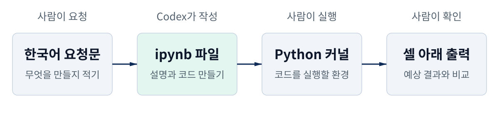
준비 파일과 영상: 아래의 실습 파일 내려받기에서 시작 묶음 ZIP, 한국어 요청문, 비어 있는 노트북, 실행 결과가 저장된 답안을 받을 수 있다. 본문에는 실제 VS Code·Codex 화면으로 만든 짧은 실습 영상 일곱 개가 있다. 소리는 없으며, 각 설명을 읽고 재생한다. 작은 화면에서는 영상의 전체 화면 버튼이나 스냅샷 확대를 이용한다.
시작 전에 준비할 것
과정 1에서 설치한 VS Code, Python, Python 확장, Jupyter 확장, 로그인된 Codex CLI를 사용한다. 설치나 로그인이 아직 끝나지 않았다면 과정 1의 첫 가격 노트북 실습을 먼저 확인한다. 프로그램 설치가 끝났다면 노트북 경험이 없어도 이 페이지부터 따라 할 수 있다.
시작 묶음을 풀고 VS Code에서 파일 → 폴더 열기로 course-02-practice를 연다. ZIP 안의 notebooks 폴더는 비어 있다. 여기에 Codex가 새 파일을 만들 것이다.
course-02-practice/
├── data/kodex200-price-fixture.csv
├── notebooks/
├── 만들기-요청.txt
├── 복구-요청.txt
├── requirements.txt
└── README.md
Python 환경을 아직 만들지 않았다면 명령 팔레트에서 Python: Create Environment를 찾아 Venv와 설치된 Python을 선택한다. 패키지 목록으로 requirements.txt를 고른다. 이미 과정 1의 환경을 사용 중이라면 그 환경을 선택해도 된다. 이번 실행에서는 .venv의 Python 3.13.5와 pandas 2.3.3, ipykernel 7.3.0을 사용했다. 커널에서 pandas를 찾지 못할 때의 확인 순서는 뒤의 문제 해결 표에 정리했다.
Codex에 네 코드 셀이 있는 노트북을 만들어 달라고 요청한다
요청문을 먼저 읽는다
만들기-요청.txt에는 다음 요청이 들어 있다. 저장할 파일, 할 일, 확인할 결과가 구체적이어야 생성된 파일을 점검하기 쉽다. 네트워크에서 새로운 가격을 받는 대신 시작 묶음의 작은 CSV를 사용한다.
주피터 노트북을 처음 배웁니다. 이 폴더에 notebooks/first-jupyter-notebook.ipynb를 만들어 주세요.
각 단계에 한국어 설명 셀을 넣고, 코드 셀은 아래 순서로 네 개만 만들어 주세요.
1. print로 "첫 주피터 노트북 실행에 성공했습니다."를 출력합니다.
2. 기준가격=100, 비교가격=105를 정하고 두 값을 출력합니다. 학습용 가상 가격이라고 설명합니다.
3. (비교가격 / 기준가격 - 1) * 100을 변화율에 저장하고, "가격 변화: 5.0%" 형식으로 출력합니다.
4. pandas로 ../data/kodex200-price-fixture.csv를 읽고, 전체 행·열 수와 Date·Close 두 열의 앞 네 행을 보여 줍니다.
설명 셀에는 셀 왼쪽 실행 버튼, 커널 선택, 위에서 아래로 실행하는 이유를 초보자 눈높이로 적어 주세요.
코드는 아직 실행하지 마세요. 출력은 비워 두고 Python 3 커널 정보가 있는 올바른 ipynb로 저장해 주세요.
기존 CSV는 변경하지 말고, 새 데이터 다운로드나 패키지 설치는 하지 마세요. 마지막 답변도 한국어로 해 주세요.
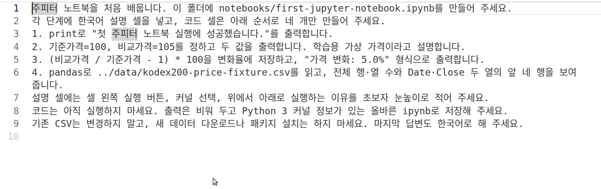
요청을 보내고 실제 파일을 연다
VS Code의 터미널 → 새 터미널을 연다. 터미널은 명령을 입력해 프로그램을 시작하는 곳이다. 현재 작업 폴더가 course-02-practice인지 확인하고 다음 명령을 입력한다.
codex exec --skip-git-repo-check --sandbox workspace-write - < 만들기-요청.txt
이 명령은 Bash·zsh에서 사용한다. exec는 Codex가 요청 하나를 처리하고 끝내는 방식이고, < 만들기-요청.txt는 파일에 적은 요청문을 전달한다는 뜻이다. --skip-git-repo-check는 Git 저장소가 아닌 실습 폴더에서도 시작하도록 하고, workspace-write는 작업 폴더에 파일을 만들 수 있게 한다. Windows PowerShell에서는 다음처럼 전달한다.
Get-Content -Raw -Encoding UTF8 .\만들기-요청.txt | codex exec --skip-git-repo-check --sandbox workspace-write -
이미 Codex의 대화 화면을 쓰고 있다면 같은 실습 폴더에서 요청문 전체를 붙여 넣어도 된다. 아래 영상은 요청문 파일을 전달한 실제 Codex CLI 실행이다. 촬영에서는 개인 설정과 대화 저장을 분리하는 옵션을 추가했다. 기다리는 구간을 생략하고, 이어서 생성된 파일을 여는 장면을 보여 준다.
생성이 끝나면 왼쪽 탐색기의 notebooks를 펼쳐 first-jupyter-notebook.ipynb를 클릭한다. 설명 셀과 코드 셀 네 개가 있는지, 코드 아래에 아직 출력이 없는지 확인한다. 이번 실제 생성에서는 설명 셀 다섯 개와 코드 셀 네 개가 만들어졌다. 설명 문장의 표현은 실행할 때마다 달라질 수 있다.
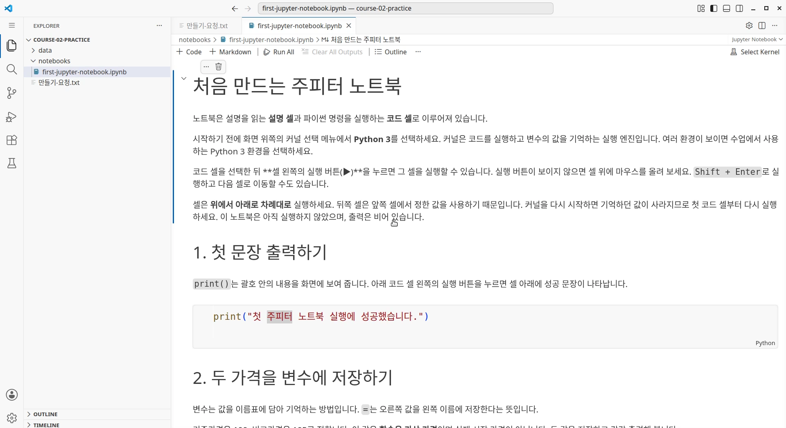
파일이 보이지 않거나 일반 텍스트로 열린다면 탐색기에서 파일 이름의 끝이 .ipynb인지 확인한다. 파일이 .ipynb.txt로 저장됐다면 Codex에 “확장자와 노트북 형식을 확인해 달라”고 요청한다. 생성이 막혀도 별도 제공한 빈 노트북을 notebooks에 넣으면 다음 실행 실습을 이어갈 수 있다.
커널을 고르고 첫 문장을 출력한다
설명 셀, 코드 셀, 출력을 구분한다
노트북의 작은 문서 단위를 셀이라고 부른다. 설명 셀은 Markdown이라는 간단한 문서 표기로 만든다. 굵은 글씨나 제목으로 보이는 설명을 읽으면 된다. 코드 셀에는 Python 명령이 들어 있고, 실행하면 보통 그 아래에 결과가 나타난다. 노트북 파일 형식 문서는 설명 셀과 코드 셀, 코드 셀의 출력이 구분되어 저장되는 구조를 설명한다.
| 화면에서 볼 것 | 이번 실습의 예 | 할 행동 |
|---|---|---|
| 설명 셀 | “1. 첫 문장 출력하기”와 안내 문장 | 먼저 읽는다 |
| 코드 셀 | print("첫 주피터 노트북 실행에 성공했습니다.") |
왼쪽 ▶를 누른다 |
| 출력 | 코드 아래에 나타난 성공 문장 | 예상한 내용과 비교한다 |
코드를 실행할 Python을 선택한다
커널은 노트북의 코드를 실행하는 프로그램이다. 이번에는 Python 커널을 사용한다. 오른쪽 위 Select Kernel을 누르고 Python Environments에서 실습 폴더의 .venv 환경을 선택한다. 이미 커널이 선택되어 있으면 버튼에 환경 이름이 표시된다. 이름이 같아 보이는 환경이 여러 개라면 경로도 확인한다. VS Code 커널 관리 안내는 노트북에서 사용할 환경을 고르는 절차를 설명한다.
.venv/bin/python을 확인했다. 자신의 환경에서는 설치한 버전이 다를 수 있다.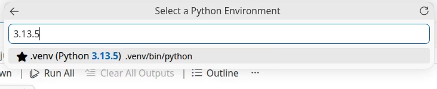
첫 코드 셀 왼쪽의 ▶ 실행 버튼을 누른다. 버튼이 안 보이면 셀 위에 마우스를 올린다. 코드 셀에 커서를 놓고 Shift + Enter를 누르면 실행한 뒤 다음 셀로 이동할 수도 있다. 메뉴와 단축키의 표시는 운영체제에 따라 달라질 수 있다.
print("첫 주피터 노트북 실행에 성공했습니다.")
print는 괄호 안의 내용을 출력한다. 따옴표 안의 문장을 바꿔도 되지만, 첫 실행에서는 그대로 사용한다. 아래처럼 셀 아래에 같은 문장이 나왔다면 노트북에서 Python 코드를 실행한 것이다. 실행 중 표시가 끝날 때까지 기다린다.
[1]은 이번 커널에서 실행한 순서를 표시한다.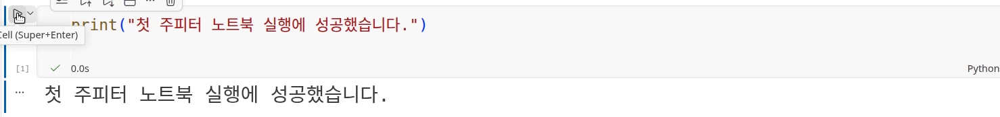
숫자를 바꾼 뒤 입력 셀과 계산 셀을 다시 실행한다
두 번째 셀에서 값을 준비한다
두 번째 코드 셀을 실행한다. 여기서는 기준가격과 비교가격이라는 이름에 각각 100과 105를 담는다. 이런 이름을 변수라고 한다. =는 오른쪽 값을 왼쪽 이름에 저장한다는 뜻으로 읽으면 된다. 두 값은 계산을 익히기 위한 가상 가격이다.
기준가격 = 100
비교가격 = 105
print("기준가격:", 기준가격)
print("비교가격:", 비교가격)
세 번째 코드 셀은 앞에서 만든 값을 사용한다. 100에서 105가 됐으므로 5% 증가했다는 결과를 예상할 수 있다. :.1f는 소수점 아래 한 자리까지 보여 달라는 출력 표기다.
변화율 = (비교가격 / 기준가격 - 1) * 100
print(f"가격 변화: {변화율:.1f}%")
실제 첫 실행 결과는 가격 변화: 5.0%였다. 계산식의 문법을 모두 외우기보다 어느 셀이 값을 만들고 어느 셀이 그 값을 쓰는지 먼저 연결해 본다.
고쳤다고 바로 계산되는 것은 아니다
이제 두 번째 코드 셀의 비교가격 = 105를 비교가격 = 103으로 바꿔 본다. 아직 실행 버튼을 누르지 않았다면 아래의 예전 출력은 105이고, 계산 결과도 5.0%로 남아 있을 수 있다. 문서의 코드를 수정하는 행동과 그 코드를 실행하는 행동은 다르다.
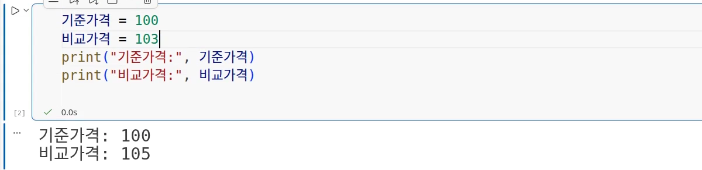
두 번째 코드 셀을 실행한 다음 세 번째 코드 셀도 실행한다. 입력 셀을 실행하면 새 가격이 준비되고, 계산 셀까지 실행하면 그 새 가격으로 결과를 다시 만든다. 이번 결과는 가격 변화: 3.0%다.
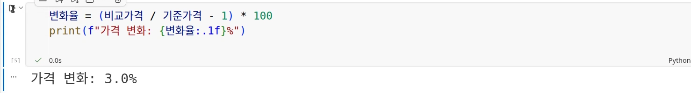
작은 CSV를 열고 한 행과 한 열을 읽는다
마지막 코드 셀로 표를 연다
CSV는 표의 값을 쉼표로 구분해 저장한 텍스트 파일이다. 이번 고정 입력은 과정 1의 KODEX 200 가격 CSV에서 첫 12개 데이터 행을 발췌했다. 날짜 범위는 2024년 1월 2일부터 1월 17일까지다. 같은 입력으로 반복 실행하기 위해 고정한 파일이다.
마지막 코드 셀을 실행한다. pandas는 표를 다루는 Python 도구이고, read_csv는 CSV를 읽는 함수다. 여기서는 읽은 표를 가격표에 담는다. pandas read_csv 문서에서 입력 경로와 읽기 동작을 확인할 수 있다.
import pandas as pd
가격표 = pd.read_csv("../data/kodex200-price-fixture.csv")
print(f"전체 행 수: {가격표.shape[0]}, 전체 열 수: {가격표.shape[1]}")
가격표[["Date", "Close"]].head(4)
../data/...는 이 노트북이 있는 notebooks에서 한 단계 위로 올라가 data 안의 파일을 찾는 경로다. 파일 배치를 바꾸면 같은 코드도 입력을 찾지 못할 수 있다. 처음에는 시작 묶음의 폴더 배치를 그대로 사용한다.
전체 표와 미리 보기를 구별한다
shape는 전체 표의 행 수와 열 수를 알려 준다. 아래의 실제 출력은 12행·7열이다. 그 아래 표가 더 작아 보이는 이유는 Date와 Close 두 열만 고른 뒤 head(4)로 앞 네 행만 표시했기 때문이다. head 문서는 앞에서부터 지정한 개수의 행을 돌려주는 동작을 설명한다.
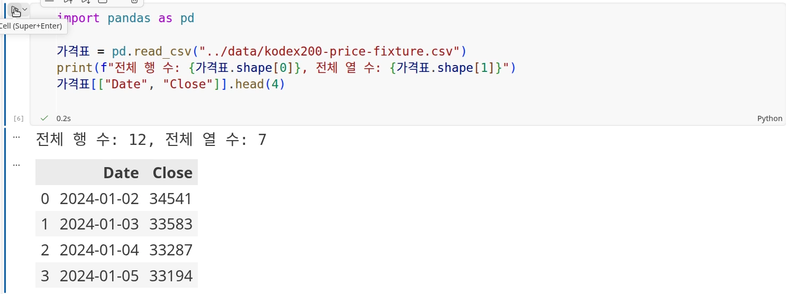
한 행에는 한 날짜의 값이 모여 있다. 한 열에는 날짜나 종가처럼 같은 종류의 값이 놓인다. Date는 날짜, Close는 이 파일에 담긴 종가 값이다. 맨 왼쪽 0·1·2·3은 이 표를 읽을 때 붙은 인덱스다. “0번 행”과 “2024-01-02”는 서로 다른 정보다.
이 미리 보기만으로 전체 파일에 결측이나 중복이 없다고 판단하지 않는다. 이 코드에서는 Date를 날짜 자료형으로 바꾸지도 않았다. 지금은 표를 열고 크기와 값을 읽는 단계이며, 추가 점검은 선택 실습과 뒤의 데이터 강의에서 이어 간다.
오류가 나면 실패한 코드와 마지막 줄을 Codex에 함께 보낸다
일부러 순서를 건너뛰어 본다
이제 Restart로 커널을 재시작하고, 두 가격을 입력하는 셀을 건너뛴 채 세 번째 코드 셀부터 실행해 본다. 재시작하면 커널이 기억하던 변수는 사라진다. 화면에 예전 출력이 남아 있더라도 새 커널에 같은 값이 준비됐다는 뜻은 아니다.
실제 녹화에서는 아래 오류가 발생했다. 오류 메시지의 마지막 줄부터 읽으면 종류와 문제의 이름을 찾기 쉽다. Python 오류 안내는 마지막 줄에 예외 종류와 설명이 나온다고 안내한다.
NameError: name '비교가격' is not defined
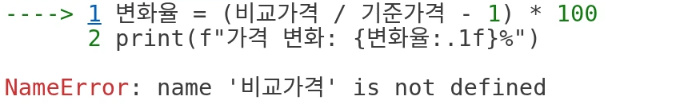
Codex가 상황을 알 수 있도록 질문한다
“오류를 고쳐 줘”만 보내면 어떤 셀을 어떤 순서로 실행했는지 빠질 수 있다. 실패 코드, 오류 마지막 줄, 직전 행동을 함께 보낸다. 시작 묶음의 복구-요청.txt에는 실제 실험에 사용한 다음 요청이 들어 있다.
주피터 노트북에서 커널을 재시작한 뒤, 가격 변화율 셀부터 실행했습니다.
실패한 코드는 아래와 같습니다.
변화율 = (비교가격 / 기준가격 - 1) * 100
print(f"가격 변화: {변화율:.1f}%")
오류 마지막 줄은 NameError: name '비교가격' is not defined 입니다.
앞쪽 셀에는 기준가격 = 100, 비교가격 = 103이 있습니다.
코드를 고치거나 대신 실행하지 말고, 원인과 제가 다시 실행할 셀의 순서, 예상 결과를 한국어 네 문장으로 설명해 주세요.
처음과 같은 방식으로 파일을 전달한다. 이번에는 설명만 요청하므로 read-only로 실행했다.
codex exec --skip-git-repo-check --sandbox read-only - < 복구-요청.txt
Codex는 실제 응답에서 커널 재시작으로 변수가 사라졌으며, 가격 입력 셀 뒤에 계산 셀을 실행하라고 안내했다. 다음 그림은 그 응답을 저장한 파일이다. 예상 출력은 3.0%였고, 안내대로 두 셀을 직접 실행하자 같은 결과가 나왔다. 설명을 이해하고 실제 출력으로 확인하는 것까지가 복구다.
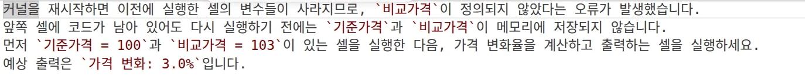
처음부터 다시 실행하고 저장하면 첫 실습이 끝난다
오류가 난 셀만 복구하는 일과 노트북 전체를 처음부터 실행하는 일은 확인 범위가 다르다. 마무리할 때는 Restart → Run All → 결과 확인 → 저장 순서로 한 번 더 실행한다. VS Code 노트북 안내는 셀별 실행과 전체 실행 기능을 설명한다.
이번 실제 마지막 실행에서는 네 코드 셀의 실행 번호가 1·2·3·4가 되었고, 인사말과 3.0%, 12행·7열 표가 다시 나타났다. 빨간 오류 출력이 없고 마지막 셀까지 실행을 마쳤는지 확인한 뒤 저장한다. 이 결과는 비교가격을 103으로 수정한 상태다. 다운로드의 비교 답안은 기본값 105의 실행 결과인 5.0%를 담고 있다.
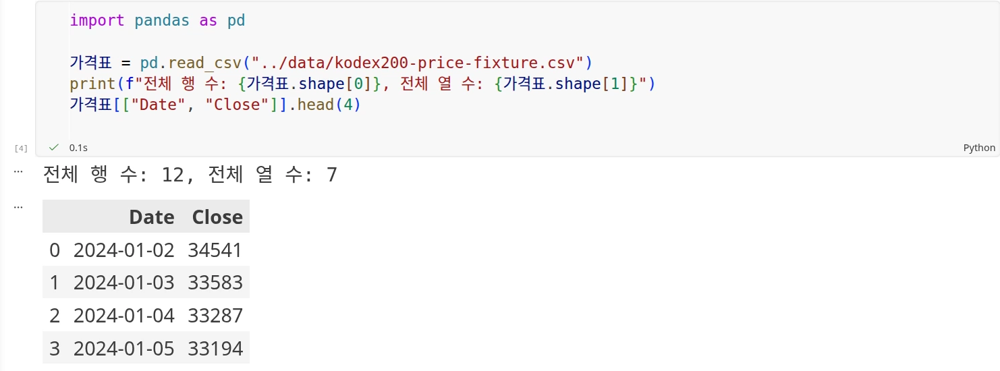
| 내 노트북에서 확인할 것 | 기대 결과 |
|---|---|
| 첫 코드 셀 실행 | 성공 문장이 셀 아래에 나타난다 |
| 기본값 100·105로 계산 | 가격 변화: 5.0% |
| 비교가격을 103으로 바꾸고 두 셀 재실행 | 가격 변화: 3.0% |
| CSV 실행 | 전체 12행·7열, 미리 보기는 네 행·두 열 |
| 커널 재시작 뒤 계산 셀만 실행 | 비교가격의 NameError |
| 가격 입력 셀 → 계산 셀로 복구 | 3.0%가 다시 나타난다 |
| 재시작 → 모두 실행 → 저장 | 네 코드 셀이 오류 없이 실행된다 |
이제 “Codex에 노트북을 만들어 달라고 요청했고, 내가 직접 실행해서 결과를 확인했다”고 말할 수 있다. 다음 영상에서는 표를 어디서 가져왔는지, 그 출처를 어떻게 확인할지 이어서 살펴본다.
막힌 곳을 확인하고, 익숙해지면 표 점검을 더 해 본다
자주 막히는 곳에서 확인할 순서
에러 이름을 모두 외울 필요는 없다. 현재 화면과 직전에 한 행동을 함께 보면 다음 확인 대상을 좁힐 수 있다. 아래 표는 앞서 실제 재현한 NameError와, 공식 동작을 바탕으로 정리한 문제 해결 안내다. 모든 항목을 이번에 별도로 녹화한 것은 아니다.
| 증상 | 먼저 확인할 것 | 다음 행동 |
|---|---|---|
| 실행 버튼을 눌러도 시작하지 않는다 | 커널 선택 여부, 실행 중 표시 | Python 환경을 고르고 준비가 끝날 때까지 기다린다 |
No module named 'pandas' |
선택한 노트북 커널과 패키지를 설치한 Python | 같은 환경에 requirements.txt를 설치하고 다시 실행한다 |
FileNotFoundError |
파일 이름과 data·notebooks 배치 | 시작 묶음과 같은 위치로 맞추고 CSV 셀을 다시 실행한다 |
NameError |
오류에 적힌 변수 이름, 그 값을 만드는 셀 | 이름의 오타와 실행 순서를 확인한다 |
| 숫자를 고쳤는데 출력이 그대로다 | 고친 셀과 그 값을 사용하는 셀의 재실행 여부 | 입력 셀, 계산 셀 순서로 실행한다 |
pandas를 설치할 때는 해당 Python 환경을 선택한 터미널에서 python -m pip install -r requirements.txt를 실행한다. 설치 후에도 같은 오류가 나면 노트북 오른쪽 위의 커널 선택을 다시 확인한다.
선택 실습: 표의 여덟 항목 점검
첫 노트북을 편하게 실행할 수 있게 되면 추가 노트북 notebook-table-reading.ipynb를 열어 본다. 행·열, 열 이름, 인덱스, 날짜 자료형, 결측, 중복 날짜, 날짜 정렬, 날짜 범위를 확인한다. 이 작은 파일에서 모든 조건이 맞았다는 사실을 다른 데이터의 정확성이나 수익성으로 확대하지 않는다.

변형 실험 노트북 table-check-cases.ipynb에서는 같은 날짜를 반복하거나 날짜 변환 옵션을 빼는 등 여덟 조건을 바꾸어 볼 수 있다. 기존 실험 결과 CSV와 함께 비교한다. 입문 실습을 마친 다음 선택해서 진행한다.
실제 실험과 공식 자료
어떤 환경에서 무엇을 확인했는가
2026년 9월 5일 Linux의 VS Code 1.135.0, Codex CLI 0.153.3에서 생성 요청, 노트북 열기, 커널 선택, 셀 실행, 숫자 수정, 오류 질문과 복구, 재시작·전체 실행·저장을 실제로 수행하고 녹화했다. Python 확장은 2026.4.0, Jupyter 확장은 2025.9.1이며 Python 3.13.5, pandas 2.3.3, ipykernel 7.3.0을 사용했다. Windows PowerShell 명령은 같은 요청문을 전달하는 안내 예시이며, 이번 녹화는 Linux 실행이다.
Codex가 생성한 파일은 노트북 형식 검사에 통과했고 코드 셀은 네 개, 저장된 출력은 비어 있었다. 별도의 새 Python 커널에서도 기본값 105와 수정값 103으로 각각 전체 실행했다. 두 실행 모두 네 코드 셀이 오류 없이 완료됐고, 5.0%·3.0%, CSV 크기와 첫 네 행이 기대값과 일치했다. CSV의 바이트는 바뀌지 않았다.
| 실험 | 조건과 실제 관측 | 확인 결과 |
|---|---|---|
| Codex 생성 | 한국어 요청문 → 설명 셀 다섯 개·코드 셀 네 개 | 유효한 ipynb, 빈 출력 |
| 기본값 전체 실행 | 기준가격 100, 비교가격 105 | 인사말, 5.0%, 12행·7열 |
| 수정값 전체 실행 | 기준가격 100, 비교가격 103 | 인사말, 3.0%, 같은 CSV 미리 보기 |
| 실제 UI 순서 오류 | 커널 재시작 뒤 계산 셀부터 실행 | 비교가격의 NameError |
| Codex 안내에 따른 UI 복구 | 가격 입력 셀 → 계산 셀 | 코드 변경 없이 3.0% 복구 |
| 실제 UI 전체 재실행 | 재시작 → 모두 실행 → 저장 | 실행 번호 1·2·3·4, 오류 출력 없음 |
본문의 일곱 클립은 총 124초다. 실제 화면의 원래 실행 속도를 유지하고, 확인할 위치에 박스와 확대를 더했다. 복구 완료 화면은 실제 마지막 프레임을 잠시 멈춰 읽을 시간을 주었다. Codex 요청과 응답 사이의 대기는 생략 사실을 화면에 표시했다. 원본 녹화와 체크포인트, 생성 직후 파일, 실제 실행 파일을 제작 기록으로 보존했다. 모든 프로그램 화면은 실제 녹화에서 추출했다.
입력 CSV의 SHA-256은 f2914729b9dfd0f7a9fd84d790f10f7c0b46038957a62d6c7bb2262c566e1dbf다. 입력 메타데이터에서 과정 1 원본의 유래와 발췌 범위를 확인할 수 있다. 추가 표 점검 실험은 앞선 같은 날의 기록이며, 입문 실험의 새 녹화와 혼동하지 않도록 별도 노트북과 결과 파일로 제공한다.
외부 1차 자료에서 확인한 내용
| 공식 자료 | 이 리포트에서 확인한 내용 |
|---|---|
| OpenAI Codex CLI | 작업 폴더에서 요청을 받아 파일을 읽고 작성·실행하는 도구이며 exec로 요청 하나를 처리할 수 있음 |
| VS Code Jupyter 노트북 | ipynb 열기, 설명·코드 셀, 셀별 실행, 모두 실행과 저장 |
| VS Code 커널 관리 | 노트북에 사용할 Python 환경을 고르는 방법 |
| Jupyter 노트북 파일 형식 | 설명 셀, 코드 셀, 실행 번호와 출력의 저장 구조 |
| Python 오류 안내 | 오류 마지막 줄의 예외 종류와 설명을 읽는 방법 |
| pandas read_csv | CSV 파일을 읽어 표로 만드는 동작 |
| pandas head | 전체 표와 앞 n개 행 미리 보기의 차이 |
실습 파일 내려받기
처음에는 시작 묶음 하나를 받으면 된다. 압축을 풀면 폴더 배치와 한국어 요청문이 준비된다. Codex가 만들 파일을 미리 넣지 않아, 빈 notebooks 폴더에서 시작할 수 있다. 아래 개별 파일도 클릭하면 브라우저에서 열리지 않고 다운로드된다.
- 첫 실습 시작 묶음 ZIP — 폴더·CSV·한국어 요청문·패키지 목록·시작 안내
- 실습 시작 안내 — 폴더 열기부터 생성·실행·복구·저장까지
- 빈 첫 노트북 — 이번에 Codex가 실제로 만든, 출력이 비어 있는 파일
- 실행 결과 비교 답안 — 기본값 105로 전체 실행한 5.0% 결과
- 만들기 요청문 — 시작 묶음의 만들기-요청.txt와 같은 한국어 내용
- 오류 복구 요청문 — 실패 코드·오류·직전 행동을 함께 전달하는 예
- 실제 Codex 복구 답변 — 이번 실험에서 받은 한국어 응답
- 입문 실험 결과 CSV — 새 커널 실행과 예상 오류·복구의 자동 검증 기록
- 고정 가격 CSV — 12행·7열의 반복 실습 입력
- 입력 메타데이터 — 원본 유래·발췌 범위·파일 해시
- 패키지 목록 — pandas·ipykernel 버전
- 추가 표 점검 노트북 — 저장 출력·NameError 복구·여덟 항목 점검
- 추가 변형 실험 노트북 — 여덟 조건을 바꾸어 보는 선택 실습
- 추가 실험 결과 CSV — 앞선 표 점검 실험의 조건·관측·검증 판정
빈 노트북과 비교 답안을 함께 쓸 때는 둘 다 notebooks/에 둔다. 기본값 실습을 먼저 끝내고, 자신의 실행 결과를 확인한 다음 답안과 비교한다.